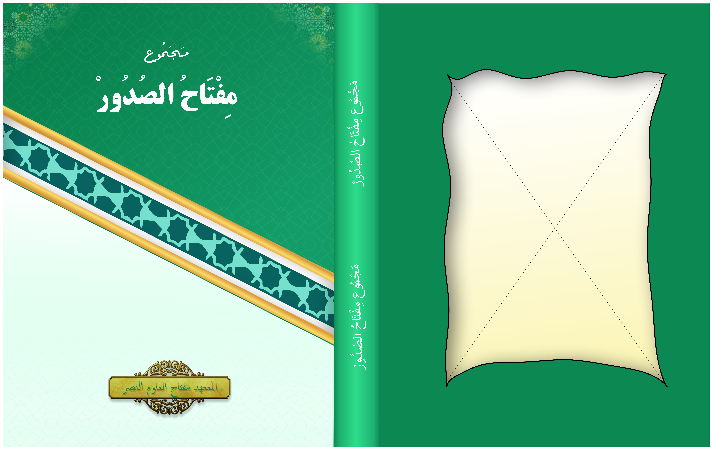

Caver Majmuk

Daftar Isi
- Nama Majmu'
- Sekapur Sirih
- Daftar Isi
- Tawassul
- Surat As-Sajadah
- Surat Yasin
- Doa Setelah Membaca Surat Yasin
- Surat Ad-Dukhan
- Surat Waqi'ah
- Doa Setelah Membaca Surat Waqi'ah
- Surah Al-Mulk
- Doa Setelah Membaca Surat Waqi'ah dan Al-Mulk
- Surah Al-Insan
- Surah Al-Buruj
- Surat Ar-Rahman'
- Surah Al-Kahfih
- Ayat Tujuh
- Ayat al-Hirzi Wa al-harsi
- Ratibul Haddad
- Istghasah Ba'da Dzuhur Dan Asyar
- Istghasah Ba'da Maghrib
- Istghasah Ba'da Isya'
- Istghasah Ba'da Subuh
- Sholawat Sulton
- Sayyidul istighfar
- Istighfar Kabir
- Doa Menyelamati Kelahiran I
- Doa Menyelamati Kelahiran II
- Doa Awal dan Akhir Tahul Hijriyah
- Doa Hari Asyuro'(tgl.10 bln Muharrom)
- Tata Cara Jalanian
- Doa Jalanian
- Wirid Setelah Sholat Lima Waktu
- Doa Setelah Sholat
- Doa Sholat Tarawih
- Doa Sholat Witir
- Doa Sholat Dluha
- Sholat Tahajjud
- Doa Sholat Tahajjud
- Sholat Istikhoroh
- Doa Sholat Istikhoroh
- Sholat Hajat
- Doa Sholat Hajat
- Nida' Maulid diba'I
- Maulid diba'I
- Doa Maulid
- Doa orang tua pada anaknya
- Doa Kepada Orang Tua Dua
- Doa Menjenguk Orang Sakit
- Doa Kafarotul Majlis
- Doa Rabu Wakasan
- Doa Rokatan Jawa I
- Doa Rokatan Jawa II
- Doa Malam Nisfu Sya'ban
- Sholat Janazah
- Talqin Untuk Janazah Laki-Laki
- Talqin Untuk Janazah Prempuan
- Qiroah Muroqi Untuk `Idul Fitri
- Qiroah Muroqi Untuk `Idul Adlha
- Bacaan Tahlil
- Doa Setelah Tahlil
- Doa Memberi Nama Anak Laki-Laki
- Doa Memberi Nama Anak Perempuan
- Doa Menempati Rumah Baru
- Adab Ziarah Kubur
- Doa Untuk Mengiring Janazah
- Niat Menyambelih Hewan Aqiqoh
- Doa Menyambelih Hewan Aqiqoh
- Doa Selamatan Aqiqoh
- Sunnah Sunnah Menyambelih Hewan Kurban
- Doa Hitanan
- Doa Menjenguk Bayi Baru Lahir
- Niat Zakat
- Doa Setelah Menunaikan Zakat Fitra & Orang Yang Menerima
- Zakat Fitrah
- Doa Di Malam Hari Raya
- Doa Setelah Sholat Jum'at